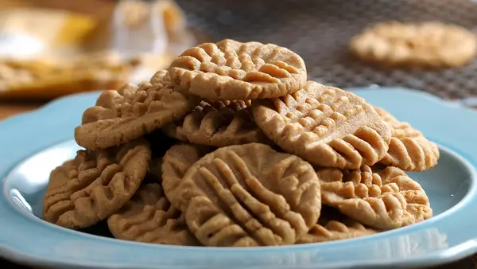
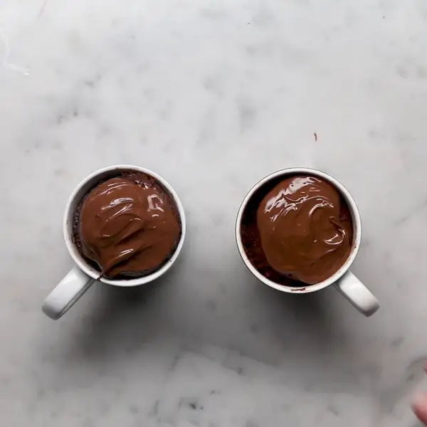
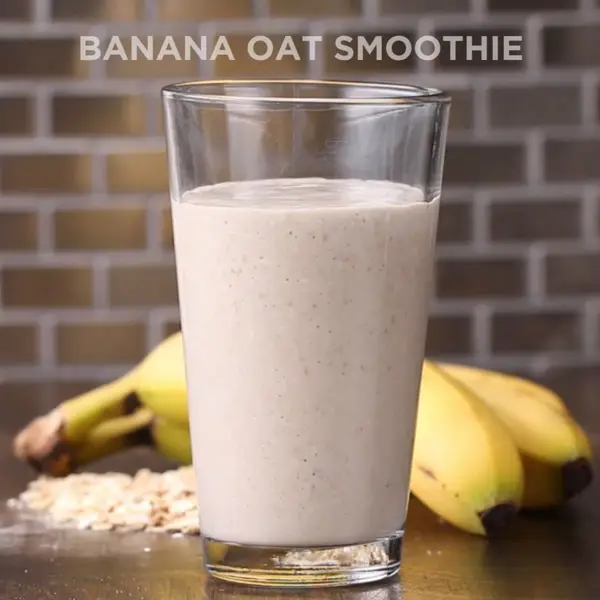

I love cooking, for real
These are some 3-ingridient recipes of desserts (my personal favs)

Peanut Butter Cookies
- Preheat oven to 350ºF (180ºC).
- In a large bowl, mix together the peanut butter, sugar, and egg.
- Scoop out a spoonful of dough and roll it into a ball. Place the cookie balls onto a nonstick baking sheet.
- For extra decoration and to make them cook more evenly, flatten the cookie balls by pressing a fork down on top of them, then press it down again at a 90º angle to make a criss-cross pattern.
- Bake for 8-10 minutes or until the bottom of the cookies are golden brown.
- Remove from baking sheet and cool.
- Enjoy!

Chocolate Hazelnut Mug Cakes
- In a medium mixing bowl, whisk together ¾ cup (225 g) chocolate hazelnut spread and the eggs.
- Fold in the flour.
- Evenly distribute into two mugs.
- Microwave each mug for 2 minutes.
- Cool for 5 minutes.
- Frost with remaining chocolate hazelnut spread and serve warm.
- Enjoy!

Banana Oat Smoothie
- Add rolled oats to a blender and blend until the oats are the size of a fine crumb.
- Add the banana and milk and blend well.
- Pour in a glass.
- Enjoy!